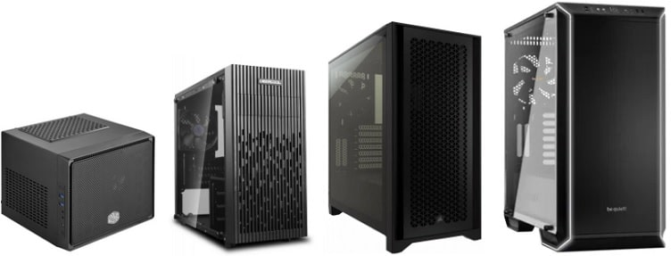

PC Cases for Beginners: Choosing Your PC's Home
Written by: The PC Parts Guide Team
March 2026 • 6 min read
The PC case is more than just a box — it's the home of all your components. A good case keeps everything cool, organized, and looks great on your desk. A bad case makes building a nightmare and can cook your parts.
What Does a Case Actually Do?
Think of a PC case like a house. Your motherboard, CPU, GPU, and all other components live inside it. The case:
- Protects your components from dust, bumps, and spills
- Manages airflow to keep everything cool
- Organizes cables to make your build cleaner
- Shows off your build (if it has a glass side panel!)

Case Sizes: How Big Do You Need?
Cases come in different sizes based on what motherboard they support. This is the most important thing to check — your motherboard must fit inside your case.
| Case Size | Fits Motherboard | Who It's For | Price Range |
|---|---|---|---|
| Mini-ITX | Mini-ITX only | Compact builds, small desks, HTPC | ₱2,500 – ₱8,000 |
| Micro-ATX | mATX, Mini-ITX | Budget builds, space-saving | ₱1,500 – ₱6,000 |
| Mid Tower (ATX) | ATX, mATX, Mini-ITX | Most people — the sweet spot | ₱2,500 – ₱10,000 |
| Full Tower | E-ATX, ATX, mATX | Workstations, extreme builds | ₱6,000 – ₱20,000+ |
Airflow: The Most Important Feature
A pretty case with bad airflow will cook your components. Always prioritize airflow over looks.
Mesh Front Panel = Great Airflow
Cases with a mesh front panel (lots of tiny holes) allow air to flow freely into the case. This keeps your CPU and GPU cool, even under heavy gaming loads.
Solid / Glass Front Panel = Restricted Airflow
Cases with a solid or glass front look beautiful but restrict airflow. They can run 5–10°C hotter than mesh cases. This is a real trade-off — looks vs. temperature.
What to Look For in a Case
GPU Clearance
Modern GPUs are huge — some are 35cm+ long and take up 3 expansion slots. Always check the maximum GPU length your case supports. Most mid towers support up to 350–380mm which covers almost all consumer cards.
Cooler Height Clearance
Big air coolers (like the Noctua NH-D15) can be very tall. If you pick a big air cooler, make sure your case supports the height. Most mid towers support 160mm+ CPU cooler height which is sufficient.
Cable Management
Look for cases with a cable management area behind the motherboard tray. This keeps your cables neat, hidden behind the panel — your build will look clean and airflow will be better too.
Drive Bays
Check how many 2.5" bays (for SSDs) and 3.5" bays (for HDDs) the case has. If you plan to have multiple drives, make sure the case has enough.
Popular Case Recommendations
| Case | Type | Airflow | Price | Why It's Good |
|---|---|---|---|---|
| Phanteks P300A | Mid Tower ATX | ⭐⭐⭐⭐⭐ | ~₱3,100 | Best budget airflow case |
| Lian Li Lancool 205 Mesh | Mid Tower ATX | ⭐⭐⭐⭐⭐ | ~₱4,500 | Great build quality + airflow |
| NZXT H510 | Mid Tower ATX | ⭐⭐⭐ | ~₱4,400 | Clean look, popular aesthetic |
| Lian Li O11 Dynamic | Mid Tower ATX | ⭐⭐⭐⭐ | ~₱4,650 | Stunning dual-glass design |
| Fractal Meshify 2 | Mid Tower ATX | ⭐⭐⭐⭐⭐ | ~₱8,000 | Premium build quality + airflow |
Tempered Glass Side Panel
Most modern cases come with a tempered glass side panel so you can see your components and RGB lighting inside. It's purely for aesthetics — it doesn't affect performance, but it looks really cool!
If you have RGB fans, RAM, and a GPU with lighting, a glass panel lets you show it all off. If you don't care about looks, a solid side panel is fine and keeps dust out better.
• Case = Your PC's home and protects your parts
• Mid Tower ATX fits most builds — choose this if unsure
• Mesh front panels = Better airflow = Cooler temps
• Check GPU length and CPU cooler height clearance
• Good cable management keeps your build clean
• Glass side panel = Show off your RGB!